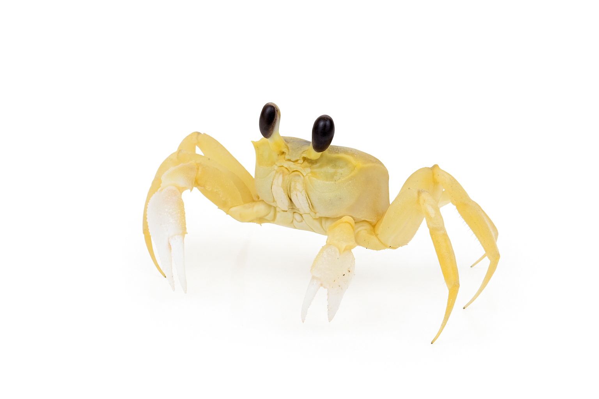

O lixo nos oceanos representa uma ameaça crescente à vida marinha e ao equilíbrio dos ecossistemas aquáticos.
Milhões de toneladas de resíduos, principalmente plásticos, são despejados no mar todos os anos, afetando
diretamente animais como tartarugas, aves marinhas e peixes, que ingerem ou ficam presos nesses
materiais.
Estudos indicam que mais de 800 espécies marinhas já sofrem com os impactos da poluição. Microplásticos, quase
invisíveis, entram na cadeia alimentar e podem chegar até o ser humano. Se nada for feito, em poucas décadas
pode haver mais plástico do que peixes nos oceanos, em massa, segundo previsões da ONU.
O acúmulo de lixo compromete a biodiversidade e ameaça a segurança alimentar de milhões de pessoas. A cada
sacola descartada incorretamente, garantimos um futuro mais incerto para os mares e para nós mesmos. Proteger os
oceanos é proteger a vida no planeta.
